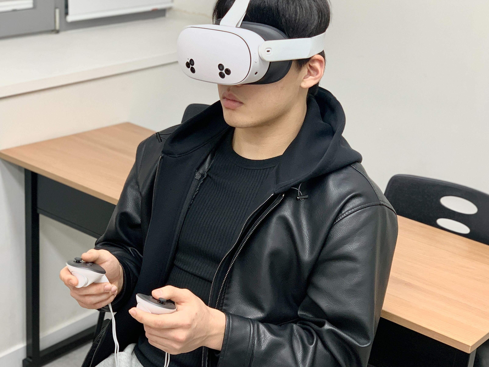

ABOUT
Project Mura
A VR platform for nonverbal expression, reflective healing, and personalized emotional care. It helps users move from internal emotion recognition to guided engagement in a responsive, stigma-free environment. Built for accessibility, it runs smoothly on common headsets and supports session logging for later reflection.
- Nonverbal sketch/gesture capture with gentle haptics
- Emotion-aware lighting and soundscapes
- Guided prompts or open exploration modes
- Session bookmarks and optional replays


ABOUT
Why It Matters
Designed for schools and wellness programs, Mura supports emotional literacy and private reflection through calm spaces, guided meditations, and an optional companion mode for supportive AI dialogue. It respects privacy with local-first sessions and consent-based, minimal data export options.
- Classroom-friendly setup in minutes
- Age-appropriate scenes and narration
- Quiet mode tailored for counseling offices
- Admin insights to track usage trends (opt-in)